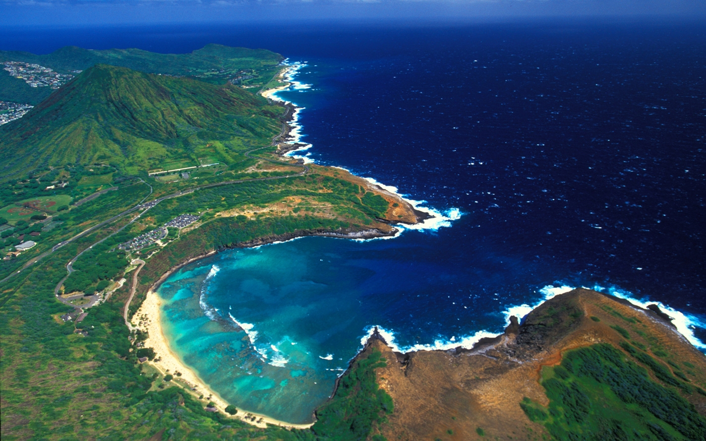

Oʻahu,[a] sometimes written Oahu, is the third-largest and most populated island of the Hawaiian Islands and of the U.S. state of Hawaii. The state capital, Honolulu, is on Oʻahu's southeast coast. The island of Oʻahu and the uninhabited Northwestern Hawaiian Islands constitute the City and County of Honolulu. In 2021, Oʻahu had a population of 995,638,[3] up from 953,207 in 2010 (approximately 70% of the total 1,455,271 population of the Hawaiian Islands, with approximately 81% of those living in or near the Honolulu urban area)
